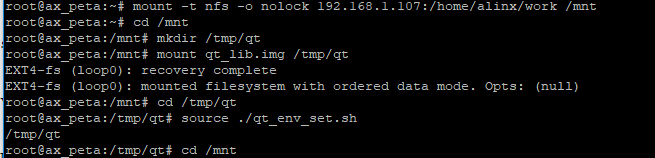
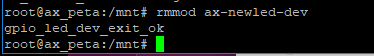

字符设备的新写法#
设备号管理#
在上一章中的实验中，设备号直接在驱动代码中写死了。这样做会带来很多麻烦：
编译驱动代码前，必须要先查看目标系统中设备号的占用情况；
更换设备后原先驱动中写死的设备号就可能已被占用；
原先的驱动注册函数register_chrdev()输入参数中仅有主设备号而没有次设备号，这意味着一个设备就会占用所有的次设备号，十分浪费。
针对这些问题，Linux内核提出了新的字符设备注册方法，并由内核来管理设备号。新增两个设备号注册函数。
当驱动程序需要给定主设备号时，使用函数来注册设备号：
int register_chrdev_region(dev_t from, unsigned count, const char *name); |
输入参数说明：
from：需要申请的起始设备号，dev_t类型，它取代了原先的主设备号和次设备号，在需要指定主次设备号的情况下，可以通过方法from=MKDEV(major, minor);来获取他的值。
count：需要申请设备号的个数，一般只要申请一个。
name：设备名。
示例：
int major = 200; //主设备号指定为 200
int minor = 0; //次设备号为 0
dev_t devid = MKDEV(major, minor); //通过主次设备号获得设备号
/* 向内核注册设备号 */
register_chrdev_region(devid, 1, "xxx-dev");
驱动程序不需要指定主设备号时，使用函数:
int alloc_chrdev_region(dev_t *dev, unsigned baseminor, unsigned count,const char *name) |
输入参数说明： dev：设备号指针，不指定主次设备号的情况下，设备号由内核分配，因此传入指针来获取设备号，注册成功后可以通过方法major = MAJOR(*dev); 和minor = MINOR(*dev);分别获取主次设备号，如果不需要用到主次设备号，不获取也可以。
baseminor：次设备号起始地址。
count：需要申请设备号的个数，一般只要申请一个。
name：设备名。
示例：
dev_t devid; //设备号
/* 申请设备号 */
alloc_chrdev_region(&devid, 0, 1, "xxx-dev");
注销设备号只要使用同一个函数：
void unregister_chrdev_region(dev_t from, unsigned count); |
输入参数含义和注册函数一致。
示例：
dev_t devid; //设备号
/* 申请设备号 */
alloc_chrdev_region(&devid, 0, 1, "xxx-dev");
/* 注销设备号 */
unregister_chrdev_region(devid, 1);
新的注册方法#
上面提到过注册函数register_chrdev()存在问题。和新的设备号管理方式相对应，现在摒弃register_chrdev()，使用一套新的方法来来注册字符设备。
字符设备数据结构#
使用cdev结构体来定来定义一个字符设备，他定义在include/linux/cdev.h中，具体如下：
struct cdev {
struct kobject kobj;
struct module *owner;
const struct file_operations *ops;
struct list_head list;
dev_t dev;
unsigned int count;
};
重要成员变量：
owner：一般设置为THIS_MODULE；
ops：设备操作函数指针；
dev：设备号。
2.1.2 cdev结构体初始化#
cdev结构体变量定义后需要用cdev_init()函数初始化，函数原型为：
void cdev_init(struct cdev *cdev, const struct file_operations *fops) |
cdev：字符设备结构体指针；
fops：设备操作函数集合结构体指针。
使用示例：
/* 字符设备 */
struct cdev ax_cdev = {
.owner = THIS_MODULE,
};
/* 设备操作函数 */
static struct file_operations ax_fops = {
.owner = THIS_MODULE,
.open…… /* 此处有省略 */
};
/* ax_cdev 变量初始化 */
cdev_init(&ax_cdev, &ax_fops)
新的注册和注销函数#
初始化字符结构体变量后，便可以使用这个变量来向Linux系统注册字符设备。使用新的注册函数cdev_add，原型为：
int cdev_add(struct cdev *p, dev_t dev, unsigned count); |
p：上面初始化后的字符设备结构体变量；
dev：设备号；
count：需要添加的设备数量。
注册函数变了，注销卸载函数也一样，不再使用unregister_chrdev()函数，改用cdev_del()函数，原型：
void cdev_del(struct cdev *p); |
输入参数即为字符设备结构体变量。
结合上设备号，补充一下中的示例：
/* 字符设备 */
struct cdev ax_cdev = {
.owner = THIS_MODULE,
};
/* 设备操作函数 */
static struct file_operations ax_fops = {
.owner = THIS_MODULE,
.open……
};
/* 设备号 */
cdev_t devid;
/* 申请设备号 */
alloc_chrdev_region(&devid, 0, 1, " xxx-dev");
/* ax_cdev 变量初始化 */
cdev_init(&ax_cdev, &ax_fops);
/* 注册字符设备 */
cdev_add(&ax_cdev, devid, 1);
…… /* 此处有省略 */
/* 卸载字符设备 */
cdev_del(&ax_cdev);
自动创建设备文件#
mdev#
medv是一个用户程序，是udev的简化版。它可以检测并根据系统中硬件设备状态来创建或者删除设备文件。在加载驱动模块后，会自动在/dev目录下创建设备节点文件，卸载驱动模块后设备节点也会自动删除。接下来看看如何实现。
类的创建和删除#
创建设备前需要先创建类，设备是在类下面创建的。类的结构体struct class结构体定义在include/linux/device.h中，需要使用函数class_create()来创建。class_create()是个宏定义：
#define class_create(owner, name) \
({ \
static struct lock_class_key __key; \
__class_create(owner, name, &__key); \
})
struct class *__class_create(struct module *owner, const char *name, struct lock_class_key *key)
展开后可以看出：
输入参数：
owner：至今出现的owner值都是THIS_MODULE，这里任然不例外；
name：类的名字。
返回值：struct class类型的结构体指针。
卸载驱动程序时需要删除类，使用函数class_destroy()，原型如下：
void class_destroy(struct class *cls); |
cls为需要删除的类。
设备节点的创建和删除#
创建类后，使用device_create()函数在类下面创建设备，原型为：
struct device *device_create(struct class *class,
struct device *parent,
dev_t devt,
void * drvdata,
const char *fmt, ...)
参数说明：
class：上节介绍的类，设备会在这个类下创建；
parent：父设备，没有父设备的话填NULL；
devt：设备号；
drvdata：设备可能会用到的数据，没有的话填NULL；
fmt：设备名，比如当fmt=axled时，创建设备后就会生成/dev/axled文件。
删除设备函数为：
void device_destroy(struct class *class, dev_t devt); |
输入参数含义和上面一样。
自动创建设备节点的实现一般放在驱动入口函数中，结合上一节类的创建以及设备号，自动创建设备节点的实现示例如下：
struct class *class; /* 类 */
struct device *device; /* 设备 */
dev_t devid; /* 设备号 */
/* 驱动入口函数 */
static int __init xxx_init(void)
{
……
/* 申请设备号 */
alloc_chrdev_region(&devid, 0, 1, "xxx-dev");
……
/* 创建类 */
class = class_create(THIS_MODULE, "xxx");
/* 创建设备 */
device = device_create(class, NULL, devid, NULL, "xxx");
return 0;
}
/* 驱动出口函数 */
static void __exit led_exit(void)
{
/* 删除设备 */
device_destroy(class, devid);
/* 删除类 */
class_destroy(class);
/* 注销字符设备 */
unregister_chrdev_region(devid, 1);
}
module_init(led_init);
module_exit(led_exit);
字符设备新驱动实验#
现在了解字符设备驱动的新写法相关的要点，接下来就动手尝试，这章我们要达成的目标和上一章相同，编写开发板上”PS LED1”这个led的设备驱动，通过驱动程序能点亮、熄灭这个led。
查看硬件原理图以及数据手册#
和上一章内容相同。
编写字符设备驱动程序#
使用petalinux创建新的驱动，方法也和上一章相同，之后重复的步骤就略过了。这里我新建了名为ax-newled-drv的驱动。打开文件ax-newled-drv.c，输入以下内容：
#include <linux/module.h>
#include <linux/kernel.h>
#include <linux/fs.h>
#include <linux/init.h>
#include <linux/ide.h>
#include <linux/types.h>
#include <linux/errno.h>
#include <linux/cdev.h>
#include <linux/device.h>
#include <asm/uaccess.h>
/* 设备节点名称 */
#define DEVICE_NAME "gpio_leds"
/* 设备号个数 */
#define DEVID_COUNT 1
/* 设备个数 */
#define DEVICE_COUNT 1
/* 主设备号 */
#define MAJOR
/* 次设备号 */
#define MINOR 0
/* gpio 寄存器虚拟地址 */
static unsigned int gpio_add_minor;
/* gpio 寄存器物理基地址 */
#define GPIO_BASE 0xE000A000
/* gpio 寄存器所占空间大小 */
#define GPIO_SIZE 0x1000
/* gpio 方向寄存器 */
#define GPIO_DIRM_0 (unsigned int *)(0xE000A204 - GPIO_BASE + gpio_add_minor)
/* gpio 使能寄存器 */
#define GPIO_OEN_0 (unsigned int *)(0xE000A208 - GPIO_BASE + gpio_add_minor)
/* gpio 控制寄存器 */
#define GPIO_DATA_0 (unsigned int *)(0xE000A040 - GPIO_BASE + gpio_add_minor)
/* 时钟使能寄存器虚拟地址 */
static unsigned int clk_add_minor;
/* 时钟使能寄存器物理基地址 */
#define CLK_BASE 0xF8000000
/* 时钟使能寄存器所占空间大小 */
#define CLK_SIZE 0x1000
/* AMBA 外设时钟使能寄存器 */
#define APER_CLK_CTRL (unsigned int *)(0xF800012C - CLK_BASE + clk_add_minor)
/* 把驱动代码中会用到的数据打包进设备结构体 */
struct alinx_char_dev{
dev_t devid; //设备号
struct cdev cdev; //字符设备
struct class *class; //类
struct device *device; //设备节点
};
/* 声明设备结构体 */
static struct alinx_char_dev alinx_char = {
.cdev = {
.owner = THIS_MODULE,
},
};
/* open 函数实现, 对应到 Linux 系统调用函数的 open 函数 */
static int gpio_leds_open(struct inode *inode_p, struct file *file_p)
{
/* 把需要修改的物理地址映射到虚拟地址 */
gpio_add_minor = (unsigned int)ioremap(GPIO_BASE, GPIO_SIZE);
clk_add_minor = (unsigned int)ioremap(CLK_BASE, CLK_SIZE);
/* MIO_0 时钟使能 */
*APER_CLK_CTRL |= 0x00400000;
/* MIO_0 设置成输出 */
*GPIO_DIRM_0 |= 0x00000001;
/* MIO_0 使能 */
*GPIO_OEN_0 |= 0x00000001;
printk("gpio_test module open\n");
return 0;
}
/* write 函数实现, 对应到 Linux 系统调用函数的 write 函数 */
static ssize_t gpio_leds_write(struct file *file_p, const char __user *buf, size_t len, loff_t *loff_t_p)
{
int rst;
char writeBuf[5] = {0};
printk("gpio_test module write\n");
rst = copy_from_user(writeBuf, buf, len);
if(0 != rst)
{
return -1;
}
if(1 != len)
{
printk("gpio_test len err\n");
return -2;
}
if(1 == writeBuf[0])
{
*GPIO_DATA_0 &= 0xFFFFFFFE;
printk("gpio_test ON\n");
}
else if(0 == writeBuf[0])
{
*GPIO_DATA_0 |= 0x00000001;
printk("gpio_test OFF\n");
}
else
{
printk("gpio_test para err\n");
return -3;
}
return 0;
}
/* release 函数实现, 对应到 Linux 系统调用函数的 close 函数 */
static int gpio_leds_release(struct inode *inode_p, struct file *file_p)
{
printk("gpio_test module release\n");
return 0;
}
/* file_operations 结构体声明, 是上面 open、write 实现函数与系统调用函数对应的关键 */
static struct file_operations ax_char_fops = {
.owner = THIS_MODULE,
.open = gpio_leds_open,
.write = gpio_leds_write,
.release = gpio_leds_release,
};
/* 模块加载时会调用的函数 */
static int __init gpio_led_init(void)
{
/* 注册设备号 */
alloc_chrdev_region(&alinx_char.devid, MINOR, DEVID_COUNT, DEVICE_NAME);
/* 初始化字符设备结构体 */
cdev_init(&alinx_char.cdev, &ax_char_fops);
/* 注册字符设备 */
cdev_add(&alinx_char.cdev, alinx_char.devid, DEVICE_COUNT);
/* 创建类 */
alinx_char.class = class_create(THIS_MODULE, DEVICE_NAME);
if(IS_ERR(alinx_char.class))
{
return PTR_ERR(alinx_char.class);
}
/* 创建设备节点 */
alinx_char.device = device_create(alinx_char.class, NULL,
alinx_char.devid, NULL,
DEVICE_NAME);
if (IS_ERR(alinx_char.device))
{
return PTR_ERR(alinx_char.device);
}
return 0;
}
/* 卸载模块 */
static void __exit gpio_led_exit(void)
{
/* 释放对虚拟地址的占用 */
iounmap((unsigned int *)gpio_add_minor);
iounmap((unsigned int *)clk_add_minor);
/* 注销字符设备 */
cdev_del(&alinx_char.cdev);
/* 注销设备号 */
unregister_chrdev_region(alinx_char.devid, DEVID_COUNT);
/* 删除设备节点 */
device_destroy(alinx_char.class, alinx_char.devid);
/* 删除类 */
class_destroy(alinx_char.class);
printk("gpio_led_dev_exit_ok\n");
}
/* 标记加载、卸载函数 */
module_init(gpio_led_init);
module_exit(gpio_led_exit);
/* 驱动描述信息 */
MODULE_AUTHOR("Alinx");
MODULE_ALIAS("gpio_led");
MODULE_DESCRIPTION("NEW GPIO LED driver");
MODULE_VERSION("v1.0");
MODULE_LICENSE("GPL");
与上一章相比，改动的部分加粗了，除了新增了一些宏定义和参数声明之外，改动的只有入口函数和出口函数两个地方。
13~21行，新增了几个宏定义，DEVICE_NAME表示设备名，也是设备节点名，最终我们要到/dev目录中去寻找这个名字的设备文件。
DEVID_COUNT和DEVICE_COUNT分别表示设备号数和设备节点数。一般一个设备对应一个驱动，所以在一个驱动代码中就只有一个设备，所以这里都为1。
MAJOR主设备号，这里我们通过函数获取设备号，主设备号不需要自己设置。MAJOR次设备号一般从0开始。
46~57行，新建了一个结构体类型，并用这个类型声明了一个变量。把之后会用到的设备号、字符设备、类、设备节点等数据类型都打包进这个结构体中。驱动开发中通常在open函数中将文件(struct file结构体)的私有数据(private_data元素)指向设备结构体，在read()、write()、ioctl()等函数通过 private_data 访问数据 设备结构体。举例如下：
/* 定义一个设备结构体 */
struct char_dev {
…………
int value;
};
/* 声明设备结构体 */
static struct char_dev charDev_t = {
.cdev = {
.owner = THIS_MODULE,
},
};
static int xxx_open(struct inode *inode, struct file *filp)
{
filp->private_data = &charDev_t;
…………
return 0;
}
static ssize_t xxx_read(struct file *filp, char __user *buf, size_t cnt, loff_t *offt)
{
int value = 0;
struct char_dev *dev = (struct char_dev *)filp->private_data;
value = dev->value;
…………
}
对于这种一般性的规范，慢慢去习惯就好了，一开始不这么写也没问题。
140~162行是关键的地方，在驱动入口函数中，把本章先后讲到的知识点申请设备号、初始化并注册字符设备、创建类和设备节点全部结合。
171~180行出口函数中就是做与入口函数中注册创建相对应的注销和删除。
结合上面几节的内容，这个新驱动代码不难理解。完成后在ubuntu虚拟机重编译得到驱动模块文件ax-newled-dev.ko。
编写测试APP#
测试APP与上一章内容一致，可以直接使用上一章的测试程序。
运行测试#
测试方法也与之前一样，给开发板上电，并挂在虚拟机的工作目录到开发板/mnt路径。
先加载驱动，执行命令：
insmod ax-newled-dev.ko |
驱动加载成功，再看看设备文件有没有创建成功，执行命令：
ls /dev |
设备节点文件已经存在了，可以使用测试APP来试试驱动程序了，执行下列命令：
cd ./build-axleddev_test-ZYNQ-Debug/ ./axleddev_test /dev/gpio_leds on |
led被点亮，最后在测试卸载驱动，执行命令：
rmmod ax-newled-dev |
如果不确定驱动名称，可以先执行lsmod命令查看。
删除设备后，再确认设备节点文件有没有被删除：
ls /dev/gpio_led |
没有问题，试验成功。